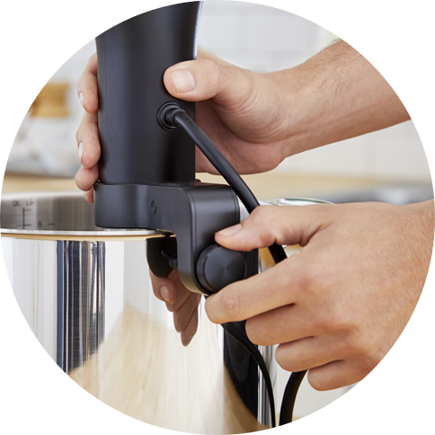

Apa Itu Anova Precision® Cooker?
Anova Precision® Cooker adalah mesin Sous Vide yang harganya ekonomis dan ramah pengguna. Tampilannya yang besar dan cerah mudah dilihat, dan integrasi aplikasi berarti Anda dapat memiliki kendali jarak jauh dari mesin. Desainnya yang sederhana dan mudah membuatnya menjadi pilihan yang populer, dan selain itu hasil masakannya serta harganya yang murah menjadikannya pilihan terbaik kami secara keseluruhan. Serta juga dapat dihubungkan dengan Google Home, Maupun Apple Homekit
Fungsi Anova Precision® Cooker
Fungsinya yakni memasak menggunakan teknik Sous Vide yang dimana Anova Precision® Cooker adalah sirkulator perendaman mandiri yang memanaskan air dan mengedarkannya di sekitar panci untuk menjaga suhu tepat secara merata. Sirkulasi imersi adalah opsi mesin video sous yang terjangkau dan mudah digunakan.
Makanan menyatukan orang-orang. Anova membuat makanan menjadi sempurna.
Dengan Anova Precision® Cooker Anda tidak perlu menjadi koki untuk memasak seperti itu. Tidak diperlukan pengaturan rumit atau alat tambahan. Ikuti resep selangkah demi selangkah di aplikasi Anova Culinary dan buat makanan yang dimasak dengan sempurna dengan satu sentuhan tombol. Apa yang Anda lakukan saat memasak dengan sempurna adalah sepenuhnya terserah Anda.
Lebih banyak kekuatan. Lebih baik.
Baik memasak makanan sederhana untuk 1 orang atau lebih, Anova Precision® Cooker memanaskan air lebih cepat dan menahannya dengan tepat pada suhu yang diinginkan sehingga Anda bisa memasak lebih cepat dari sebelumnya.
Apa Itu Sous Vide ?
adalah nama teknik memasak yang memanfaatkan pengaturan suhu (dengan medium air) yang presisi.
Nama sous vide sendiri berasal dari Bahasa Perancis yang artinya under vacuum, karena dengan sous vide ini makanan ditaruh di dalam wadah (biasanya plastik) yang semua udaranya dikeluarkan (vacuum) lalu plastik ini diletakkan di dalam air (biasanya mengalir) dalam waktu yang lama, yaitu 1 hingga 7 jam, (bisa sampai 48 jam juga dalam kondisi tertentu) dengan suhu air yang sudah diatur stabil. Tujuannya ialah untuk membuat makanan matang secara sempurna dan seragam, bagian dalamnya matang tanpa membuat bagian dalam terlalu matang (over cook) dan menjaga kelembaban. Sumber: Wikipedia. Setelah proses sous vide ini masakannya sudah matang namun untuk dapat menyajikannya perlu di finishing lebih dulu seperti digoreng/dibakar (atau yang lainnya) sebentar agar tekstur bagian luar nya berwarna kecoklatan dan mendapatkan reaksi Maillard sehingga rasanya semakin enak.
Teknik memasak sous vide ini dulu nya hanya digunakan di restoran-restoran berbintang, namun sekarang dengan adanya alat-alat sous vide untuk konsumen rumah, seperti Anova Precision® Cooker, kamu juga bisa menikmati makanan dengan kematangan yang sempurna setiap saat.
Berbeda dengan teknik memasak biasa, dengan sous vide suhu selama proses memasak dapat diatur agar stabil, tidak berubah atau naik sepanjang proses memasak, untuk lebih jelasnya dapat melihat grafik yang dibuat oleh ChefSteps ini:
Bagaimana Sous Vide Lebih Baik Dari Cara Memasak Konfensional
Sous Vide Steak vs. Traditionally Cooked Steak
Steak di sebelah kiri dimasak dengan suhu 129ºF, sedangkan steak di sebelah kanan dimasak dengan wajan. Seperti digambarkan dalam perbandingan di atas antara memasak sous vide steak dan steak pan-cooking, ada keuntungan penting untuk memasak sous vide daripada metode tradisional.
Sous Vide Eggs vs. Traditionally Cooked Eggs

Telur di sebelah kiri dimasak secara konsisten dengan tekstur yang diinginkan. Di sebelah kanan, permainan menebak menghasilkan kuning mentah dan berair dengan kulit putih yang terlalu tebal.
Tiga langkah sederhana menuju hidangan yang dimasak dengan sempurna.

Pasang ke pot Anda.
Tambahkan makanan Anda dalam Sealed Bag
Masak dengan kontrol manual atau menggunakan aplikasi
Spesifikasi Anova Precision® Cooker
Spesifikasi:
- Power : 1000 Watts
- Daya Tahan : Plastik dan Stainless Steel, Berserfitikasi IPX7 water and splash resistance
- Presisi : Akurasi Suhu: +/- 0,1˚C (0,2˚F) dan Kisaran Suhu: 0˚-92˚C (32˚-197˚F)
- Kegunaan : Kontrol waktu dan suhu manual, Penjepit yang bisa disesuaikan dan dilepas
- Size : Tinggi 325mm (12,8 ″) dan Berat 0,7 kg / 1,6 lbs
- Ukuran Kontainer : Min water line: 65 mm dan Max water line: 153 mm
- Suhu pengoperasian : -10℃ ~ 50℃
- Konektivitas : WiFi 802.11 b / g / n 2,4 GHz, Aplikasi iOS dan Android
Harga Anova Precision® Cooker
Rp. 3,275,000